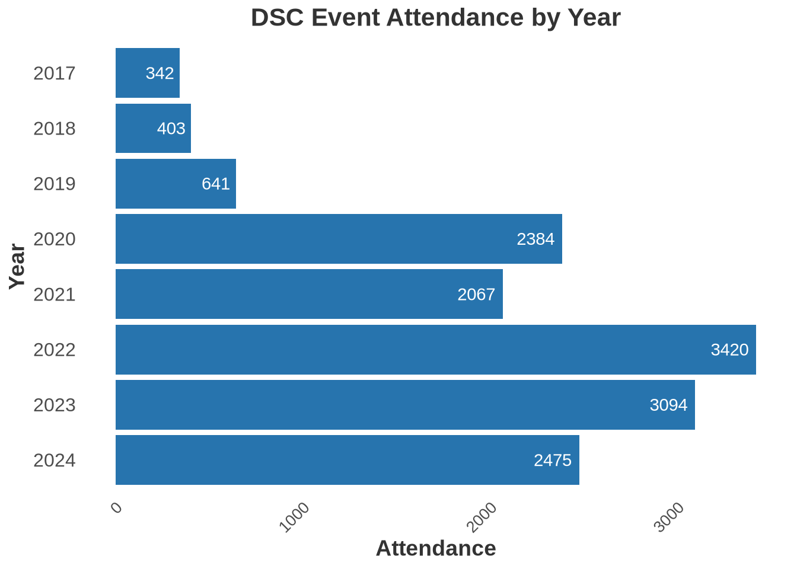
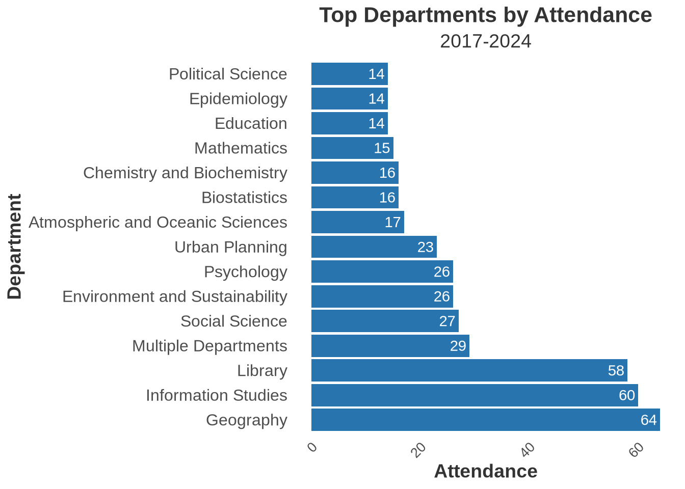
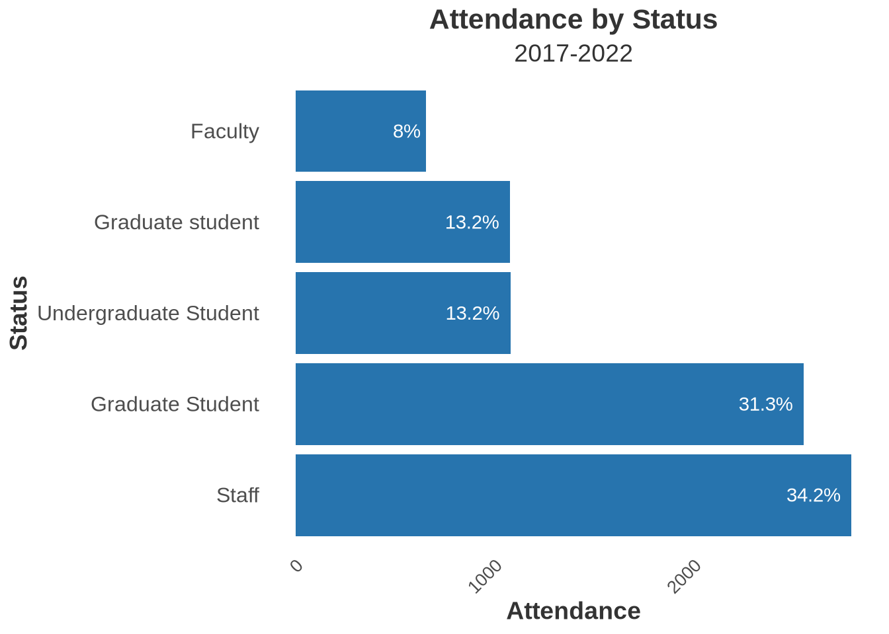
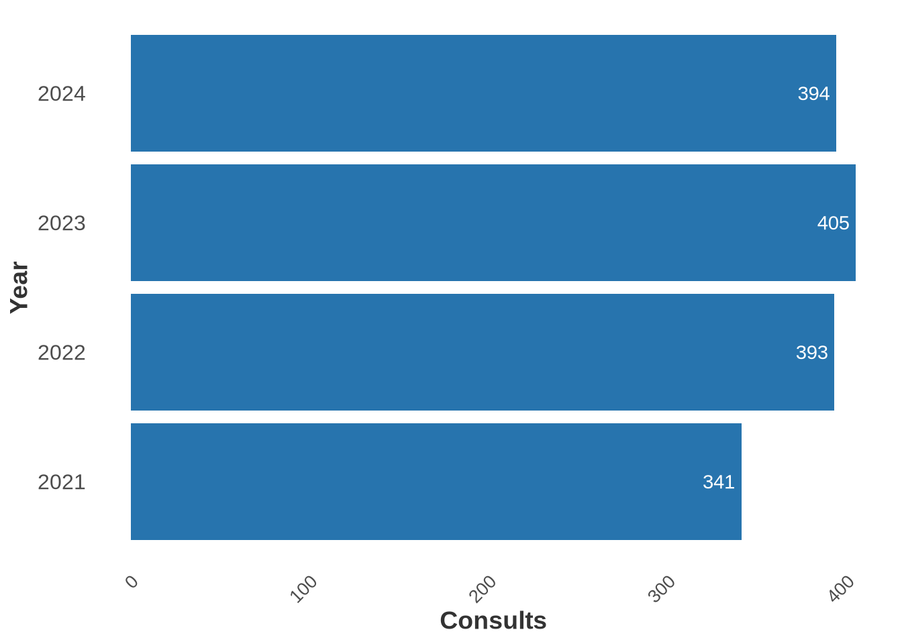
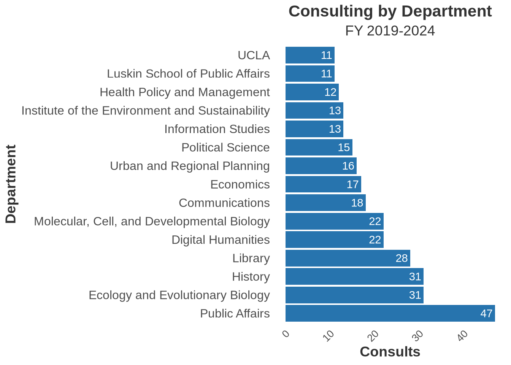
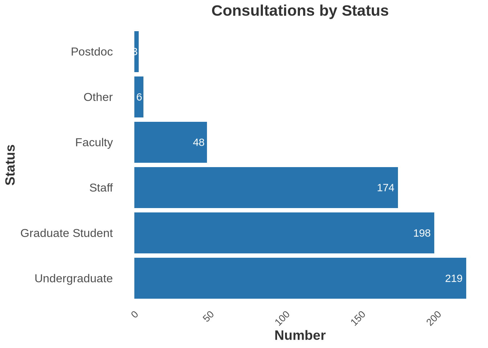
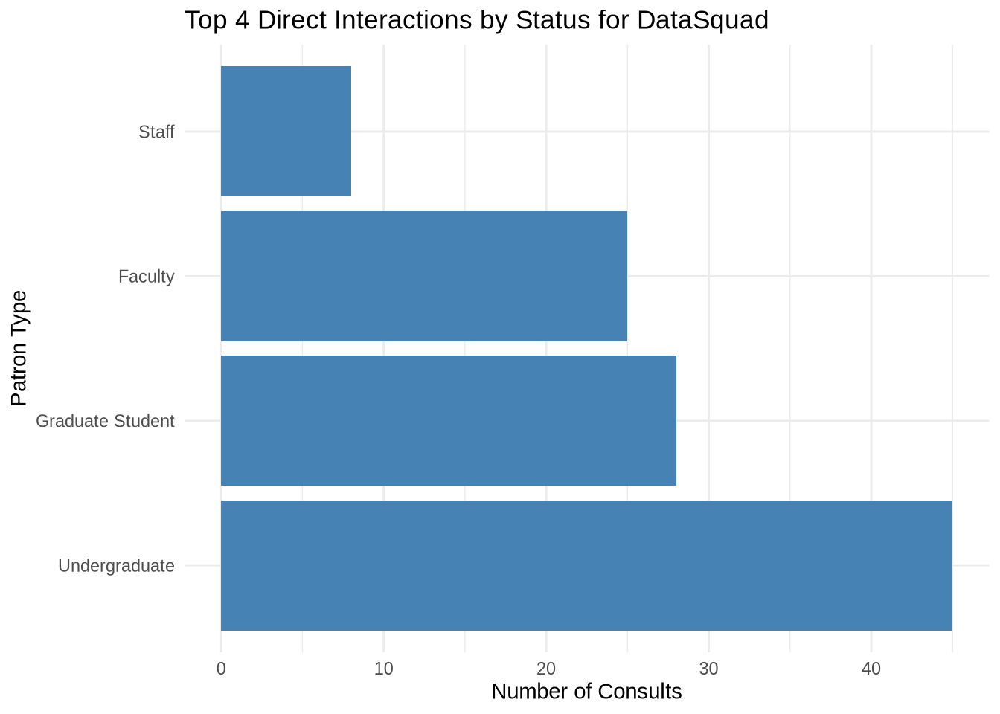
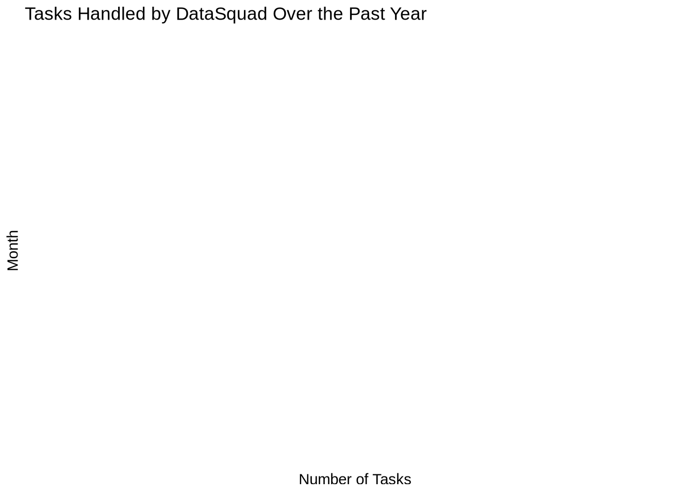
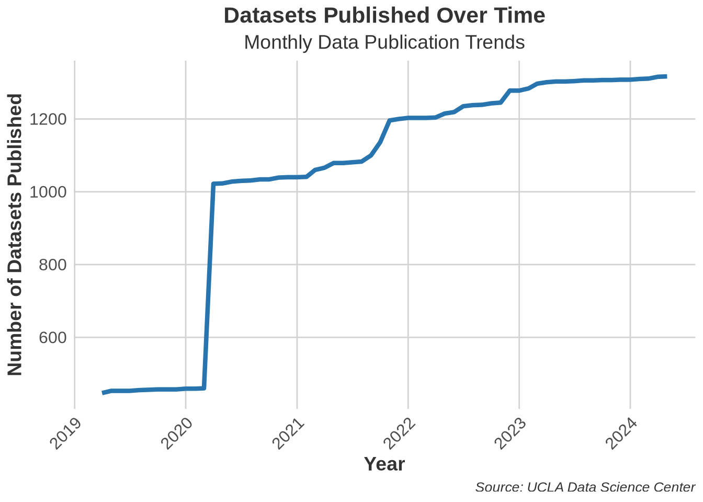
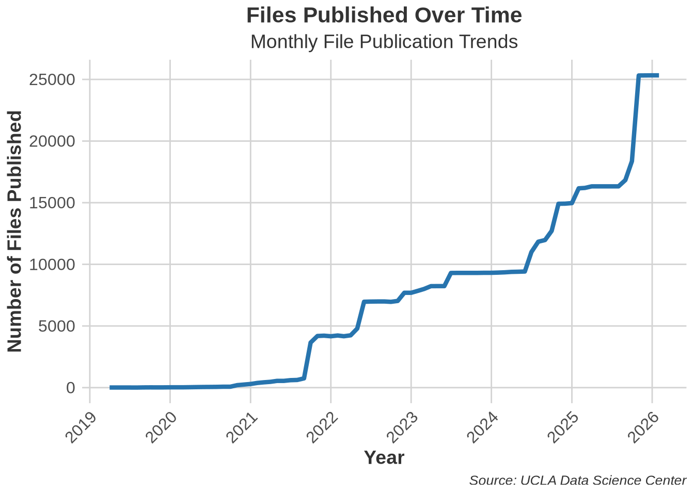

DSC Report: 2024
Events & Workshops
The DSC puts on events for the UCLA community and for the larger UC system in collaboration with other campuses. We manage the UCLA Carpentries program and provide a community for over 15 instructors on campus. We have also catalyzed a UC-wide Carpentries community and, over the pandemic, developed collaborative programming and workshop events. The success of this model has led to collaborative work in the development of UC Love Data Week in 2021 and subsequent years. In a similar vein, UC GIS Week was started in 2020 by GIS professionals in the UC system. We think these UC collaborative educational events will be a permanent fixture even as we offer more traditional local instruction.
Our workshops typically address skills gaps in data science and foundational coding for researchers, staff, and librarians. We also contribute to curricula and train-the-trainer best practices through a global network.
To get a sense of the growth of events organized, taught & designed by DSC instructors, let us look at attendance over time:
Attendance over time
Departments, Schools & Units
Since 2017, our workshops have been attended by 148 different departments, schools, centers or units from UCLA.
We can look at the top departments who attend our workshops:

Affiliation of Attendee: 2017-24
A look at the affiliation of learners who come to our workshops.

Consultations
We work with researchers one-on-one to help them accomplish their research goals. Prior to the pandemic, we provided consultations both online and in-person, depending on the researchers’ preferences. We estimate that prior to March 2020, we provided consultations online approximately 10-15% of the time. During the pandemic, we moved our service to online only and restarted in-person consulting in 2023 on a smaller scale as a pilot. Regardless of how users access our service, it has shown growth over time. With the move to the first floor of YRL in 2024, we anticipate more business due to the improved visibility of our location and the addition of more walk-in hours.

Consulting by Department
Since 2019, when we started capturing more user information, our consultations have come from 115 different departments, schools, or centers. We include The Library in this number because, as a secondary and sometimes tertiary referral point, we often work with liaising librarians and internal units needing data support. For 2023, we provided data services to 51 campus departments.
Historically, we didn’t require patrons to provide departmental information in our appointment scheduler, so the data may be incomplete. While we’ve normalized departments, schools, and centers as much as possible, some variability remains. Despite this, the data shows that DSC services are interdisciplinary, aligning with our vision to broaden the library’s data services.

Researcher Status
When provided, we also collect information on our users’ status.

DataSquad Work Overview
The DataSquad team engages in various activities, supporting data services at UCLA. Their work can be categorized into direct interactions with patrons and assigned tasks from DSC staff consultants, often managed through Trello boards.
Direct Consults with Researchers
DataSquad members frequently interact with faculty, staff, and students to provide consultations and support. The total number of consults provided by DataSquad is 187.

The following chart summarizes the number of consults by patron type for the top 4 categories:

DataSquad Assigned Work via Trello
In addition to direct consultations with researchers, DataSquad handles a significant number of project tasks assigned by the DSC team via our Trello board. These tasks include various research support activities, managed and tracked by DSC staff who act as mentors. The following chart provides an overview of the tasks handled by DataSquad over the past year:
# Plot for Monthly Tasks
ggplot(monthly_tasks, aes(x = month, y = total_tasks)) +
geom_bar(stat = "identity", fill = "steelblue") +
labs(title = "Tasks Handled by DataSquad Over the Past Year",
x = "Month",
y = "Number of Tasks") +
theme_minimal() +
scale_x_date(date_labels = "%b %Y", date_breaks = "1 month") +
theme(axis.text.x = element_text(angle = 45, hjust = 1)) +
coord_flip()
Data Repositories & Infrastructure
UCLA Dataverse
Datasets in UCLA Dataverse are collections of files and this is a view of the growth of those collections since we started Dataverse in 2019. The big jump in 2020 is the addition of metadata from the existing Social Science Data Archive collection we had already curated previously in Dataverse.

File growth in Dataverse is another metric to consider when assessing the usage of UCLA Dataverse as a resource on campus. Each file in Dataverse is addressable by a unique DOI.
